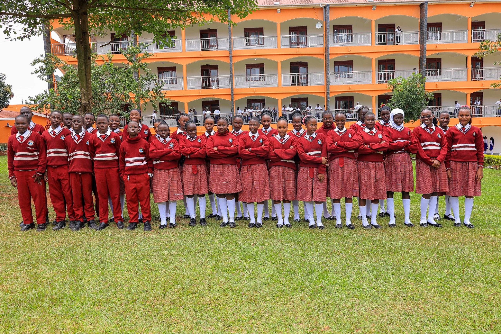
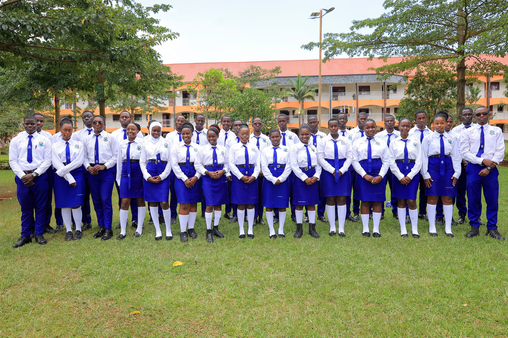
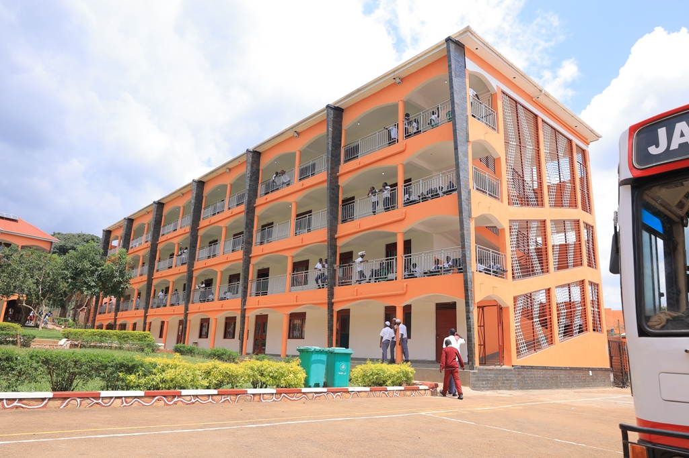
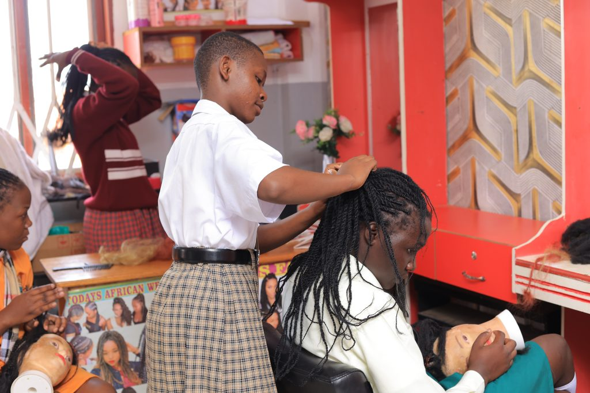
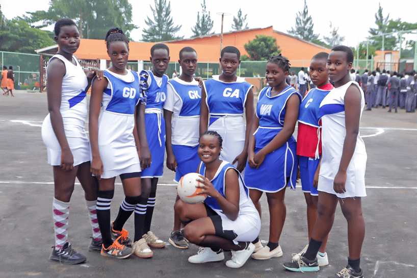
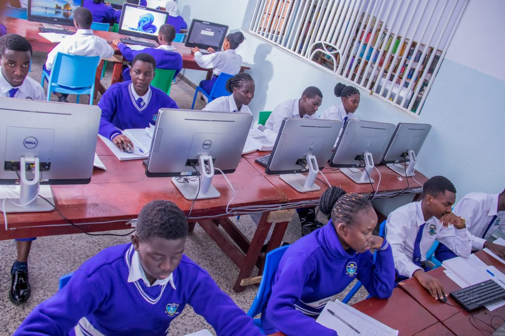
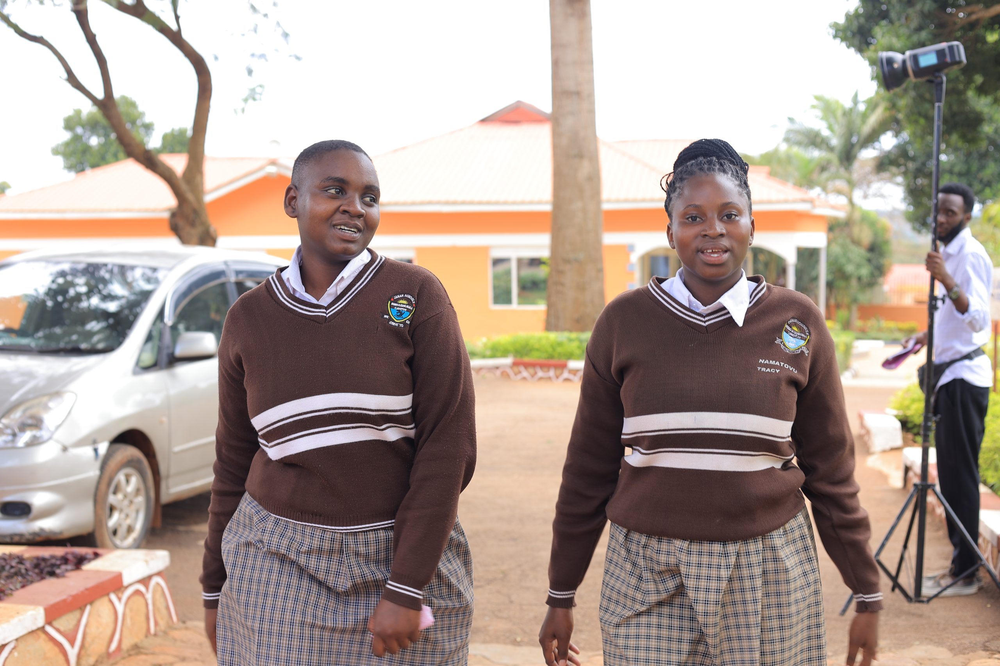

Welcome to Janan Schools
Where Vision is shaped, character is built and excellence becomes tradition.
Explore our Admission pro designed to nurture your passion for technology and equip you with the skills to shape the future.
UACE A-Level curriculum is implemented through organized teaching, continuous assessment, practical learning, research, and strong exam preparation. Schools closely monitor performance, enforce discipline, use modern learning methods, and equip students with both high grades and real-life skills for university and careers.
Structured academic pathways in Arts and Sciences, integrating research, innovation, continuous assessment, practical learning, digital literacy, critical thinking, and competency-based instruction to build strong academic foundations, creativity, and readiness for advanced studies.
Early Childhood Development: Play-based learning to develop literacy, numeracy, creativity, and social interaction.
Primary Education: Strong emphasis on core subjects-English, Mathematics, Science, Social Studies, Religious Education, and Local Language.
We offer a wide range of opportunities for students to explore their interests and develop their skills.



At Janan Schools, education goes beyond the classroom. We are devoted to the holistic development of every learner-academically, socially, emotionally, and physically. Our goal is to raise confident, disciplined, and compassionate individuals who are ready to thrive in a dynamic world.

Janan Schools is a true one-stop center for holistic education-where academic excellence meets real-world skills and lifelong empowerment. Our vocational programs provide practical, hands-on training that equips learners with valuable skills for self-reliance and innovation. We offer courses in bakery, electrical installation, plumbing, modern agriculture, tailoring, computer repair, welding, hairdressing, and media production, including TV and radio presentation..

At Janan Schools, learning goes beyond the classroom. Our wide range of activities nurtures talent, discipline, and teamwork while shaping confident, creative, and well-rounded learners. Sports: Students enjoy a vibrant sporting culture featuring football, netball, badminton, tennis (lawn and table), basketball, volleyball, woodball, athletics, swimming, chess, scrabble, and dancesport.

At Janan Schools, we believe that a well-designed environment shapes a student’s educational journey. Our modern science and ICT laboratories, e-learning research labs, and digital library provide hands-on learning and easy access to knowledge. Spacious, well-ventilated classrooms equipped with smart projectors enhance visual teaching, ensuring comfort, innovation, and academic excellence for every learner.
"“The teachers are very supportive and always encourage us to do our best. I enjoy learning here because classes are interactive and interesting."

“The school environment is safe, clean, and welcoming. I have made great friends and learned valuable life skills.”